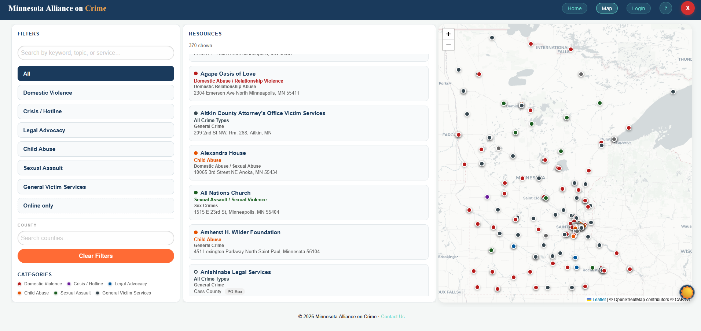
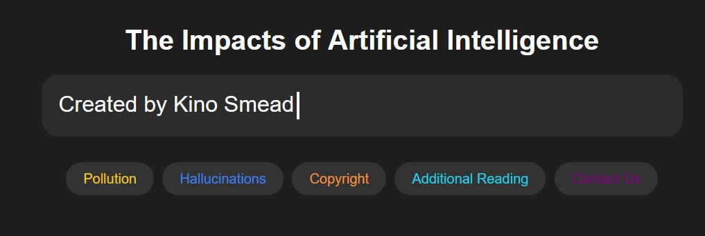
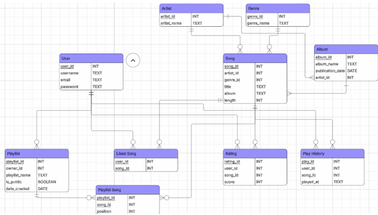

Projects and Experiences

Minnesota Alliance on Crime Database
The creation of a database for data provided by the Minnesota Alliance on Crime (a coalition for giving relief to victims of crime). Given unsorted and unformated data in an Excel spreadsheet, I created a database using SQLite to store and fetch locations, contact information, and offered services from several hundred organizations across the state of Minnesota. I also created the API for connecting the database to a frontend website. The initial excel spreadsheet was in horrible shape, and required large amounts of effort to use automated and manual systems to get the data in useable consistent form for the database. After significant effort, the database and API could be plugged into a frontend website made by other developers.
"Screensaver" Art Piece
A simplistic but highly satisfying art piece made using the p5.js library, which creates shapes that follow the mouse and spin. It was a great way to test my understanding of javascript and of the less traditional interactive interfaces. To view for yourself, click this link.
Chess-Based RPG
I developed a game using Java broadly based off of the rules of Chess, but with RPG elements such as character classes, stats, and abilities. This involved creating a system for the game board, piece movement, and general gameplay of Chess, and then layering additional mechanics on top such fog of war and upgrading pieces. I also created multiple simple AI to play against, each with different algorithms for preferred strategy. This was created from scratch in Java, and was a great way to test my understanding of Object-Oriented Programming and game design.

Website discussing impacts of AI
A website based on a paper, created using HTML and CSS for the Digital Media Arts program, with the goal of educating readers on the impacts of AI on the job market. The website includes a variety of sections, such as an introduction to AI, a discussion of its potential benefits and drawbacks, an environmental study, and a list of resources for further reading. The website is designed to be visually appealing and easy to navigate, with clear headings and detailed original research.
"Spotify" Mock-Up

A mock-up of creating a Spotify competitor, made using SQL for the database and HTML/CSS for the frontend. The project involved designing a database schema to store information about users, playlists, songs, and artists, as well as creating a user interface that allows users to search for and play music. The mock-up includes a homepage with a search bar, a library section with playlists and albums, and a player section with controls for playing music.